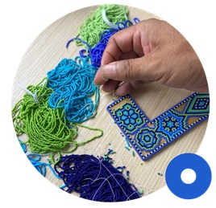
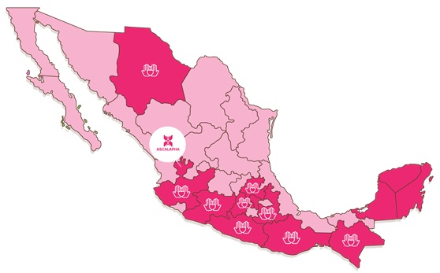

Ascalapha Mexico 
About Us
- Ascalapha is a bridge that connects these two opportunities: The use of the artisan know-how with the needs of companies to acquire unique and social responsible products.

- We design and customize corporate gifts and special projects where we incorporate artisan techniques from vulnerable communities in Mexico
